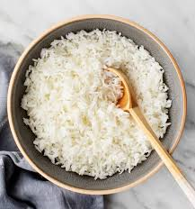

Rice

Description
Easy Homemade Fried Rice
This fried rice recipe from The Kitchn is a quick, flexible dish that transforms leftover rice into a flavorful, satisfying meal.
It combines scrambled eggs, vegetables, and aromatics like garlic and green onions, all stir-fried with soy sauce for a savory finish.
Perfect as a main or side, it can be easily customized with your favorite proteins or veggies.
The key is using day-old rice for the best texture. Great for weeknights or meal prep.
Ingredients
- 3 cloves garlic
- 2 medium scallions (whites and greens, separated)
- 2 tablespoons plus 1 teaspoon vegetable oil, divided
- 1 cup frozen peas and carrots (do not thaw)
- 4 cups cold cooked brown or white rice (preferably medium-grain, day-old)
- 1 tablespoon soy sauce or tamari
- 1½ teaspoons kosher salt, plus more as needed
- ¾ teaspoon ground white pepper, plus more as needed
- 2 large eggs
- ¾ teaspoon toasted sesame oil
Steps
-
Mince 3 garlic cloves.
Thinly slice 2 medium scallions crosswise on a slight diagonal, keeping the white parts separate from the light and dark green parts.
-
Heat 2 tablespoons of the vegetable oil in a large wok or nonstick frying pan over medium-high heat until shimmering.
Add the garlic, scallion whites, and 1 cup frozen peas and carrots.
Stir-fry until the carrots and peas are thawed, about 2 minutes.
-
Add 4 cups cold cooked rice, breaking up any clumps of rice with your fingers as you add it in.
Toss to combine with the peas and carrots.
Add 1 tablespoon soy sauce, 1 1/2 teaspoons kosher salt, and 3/4 teaspoon ground white pepper.
Stir to combine.
-
Push the fried rice to one side of the pan.
Add the remaining 1 teaspoon vegetable oil to the now-empty side of the pan, then crack 2 large eggs into the oil.
Scramble into fluffy curds until almost set.
-
Turn off the heat and stir the eggs into the fried rice, breaking up any large pieces of egg.
Drizzle with 3/4 teaspoon toasted sesame oil and toss to combine.
Taste and season with more kosher salt and white pepper as needed.
Garnish with the reserved scallion greens.
Home